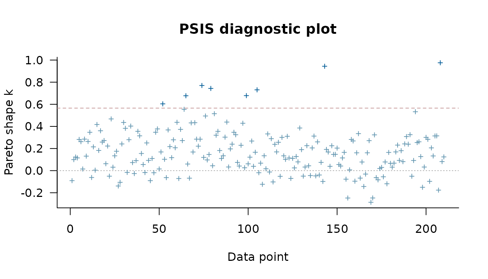

This vignette describes how to compare competing model specifications. RprobitB provides three criteria for this purpose: the widely applicable information criterion (WAIC), Pareto-smoothed importance sampling leave-one-out cross-validation (PSIS-LOO), and Bayes factors. WAIC and PSIS-LOO estimate the expected predictive accuracy of a model for new data from the pointwise log-likelihood of the posterior draws (Watanabe 2010; Vehtari et al. 2017). A Bayes factor is the ratio of the marginal likelihoods of two models, that is, of the likelihood averaged over the prior of each model (Kass and Raftery 1995). In panel data, the pointwise log-likelihood is evaluated per decider, so WAIC and PSIS-LOO estimate the accuracy of predicting the choices of new deciders. The examples use data sets of the AER package (Kleiber and Zeileis 2008), the mlogit package (Croissant 2020), and the MASS package (Venables and Ripley 2002). The vignette Get started with RprobitB explains how to fit and read a model, and the vignettes Model specification and variants and Modeling preference heterogeneity cover the specifications compared here.
A nested model comparison for travel mode choices
The TravelMode data of the AER package
record which of four modes 210 travelers between Sydney and Melbourne
had taken: air, train, bus, or car. The vignette Model
specification and variants fits a model in which terminal waiting
time, in-vehicle cost, and travel time vary across modes, while
household income and the size of the traveling party shift the utilities
of the modes relative to air, the base alternative.
Does income change the mode choice beyond cost and time? The reduced
model below omits the two traveler characteristics and the
alternative-specific constants. update() rebuilds the call
of the full model with the formula changed part by part:
. ~ wait + vcost + travel | 0 keeps the first part and
empties the second.
data("TravelMode", package = "AER")
TravelMode$choice <- TravelMode$choice == "yes"
TravelMode$vcost <- TravelMode$vcost / 1.6196
TravelMode$income <- TravelMode$income / 1.6196
full_model <- fit(
choice ~ wait + vcost + travel | income + size,
data = TravelMode,
format = "long",
column_decider = "individual",
column_alternative = "mode",
iterations = 20000,
warmup = 10000,
thin = 20,
chains = 2,
progress = FALSE
)
reduced_model <- update(full_model, . ~ wait + vcost + travel | 0)logLik() evaluates the log-likelihood at the posterior
means of the parameters. Its df attribute counts the free
parameters, without the error variance that is fixed to identify the
utility scale, and its nobs attribute counts the
independent likelihood units, here the 210 travelers with one choice
each.
logLik(full_model)
#> 'log Lik.' -175.6099 (df=17)
logLik(reduced_model)
#> 'log Lik.' -236.754 (df=8)The log-likelihood values can be used to compute AIC and BIC, but it ignores the posterior uncertainty about the parameters. WAIC and PSIS-LOO instead use all posterior draws and are the primary criteria.
WAIC and PSIS-LOO
WAIC() and loo() return objects of the
loo package (Vehtari et al. 2026). Both report the
expected log predictive density elpd, an effective number
of parameters, and the criterion on the deviance scale. Lower
waic and looic, or equivalently higher
elpd, mean better predictive accuracy. Watanabe (2010)
introduced WAIC and showed that it asymptotically approximates Bayesian
cross-validation; Vehtari et al. (2017) and Vehtari et al. (2024) developed the PSIS-LOO
approximation and its diagnostics.
WAIC(full_model)
#> Warning:
#> 9 (4.3%) p_waic estimates greater than 0.4. We recommend trying loo instead.
#>
#> Computed from 1000 by 210 log-likelihood matrix.
#>
#> Estimate SE
#> elpd_waic -193.8 15.9
#> p_waic 19.2 3.5
#> waic 387.7 31.7
#>
#> 9 (4.3%) p_waic estimates greater than 0.4. We recommend trying loo instead.
WAIC(reduced_model)
#> Warning:
#> 8 (3.8%) p_waic estimates greater than 0.4. We recommend trying loo instead.
#>
#> Computed from 1000 by 210 log-likelihood matrix.
#>
#> Estimate SE
#> elpd_waic -241.8 9.2
#> p_waic 12.6 1.9
#> waic 483.7 18.3
#>
#> 8 (3.8%) p_waic estimates greater than 0.4. We recommend trying loo instead.The loo package warns when the contribution of a
decider to p_waic exceeds 0.4, the level above which Vehtari et al. (2017) consider the WAIC approximation
unreliable; here this concerns a few travelers. PSIS-LOO is preferable
in this situation, because it comes with a diagnostic per traveler: a
Pareto-k value below the printed threshold means that the importance
sampling for that traveler is reliable, and larger values usually belong
to travelers whose choices have low probability under the model (Vehtari et al.
2024).
loo_full <- loo(full_model)
#> Warning: Some Pareto k diagnostic values are too high. See help('pareto-k-diagnostic') for details.
loo_reduced <- loo(reduced_model)
#> Warning: Some Pareto k diagnostic values are too high. See help('pareto-k-diagnostic') for details.
loo_full
#>
#> Computed from 1000 by 210 log-likelihood matrix.
#>
#> Estimate SE
#> elpd_loo -194.7 16.1
#> p_loo 20.1 3.8
#> looic 389.4 32.2
#> ------
#> MCSE of elpd_loo is NA.
#> MCSE and ESS estimates assume independent draws (r_eff=1).
#>
#> Pareto k diagnostic values:
#> Count Pct. Min. ESS
#> (-Inf, 0.67] (good) 207 98.6% 127
#> (0.67, 1] (bad) 3 1.4% <NA>
#> (1, Inf) (very bad) 0 0.0% <NA>
#> See help('pareto-k-diagnostic') for details.The loo package plots the Pareto-k values per traveler. Points above the dashed line mark the travelers whose choices are hardest to predict from the choices of the other travelers.
plot(loo_full)
loo::loo_compare() ranks the models by elpd
and reports the difference to the best model with its standard
error.
loo::loo_compare(loo_full, loo_reduced)
#> model elpd_diff se_diff p_worse diag_diff diag_elpd
#> model1 0.0 0.0 NA 3 k_psis > 0.67
#> model2 -47.3 10.9 1.00 1 k_psis > 0.67
#>
#> Diagnostic flags present.
#> See ?`loo-glossary` (sections `diag_diff` and `diag_elpd`)
#> or https://mc-stan.org/loo/reference/loo-glossary.html.The models are named in the order of the arguments, so
model1 is the full model. It ranks first, and the reduced
model falls short by several standard errors of the difference: income
and party size improve the prediction of the mode choice.
Bayes factors
bayes_factor() estimates the marginal likelihood of each
model with the bridgesampling package (Gronau et al. 2020; Meng and Wong 1996) and returns their
ratio; values above one favor the first model.
set.seed(1)
bayes_factor(full_model, reduced_model, log = TRUE)
#> Estimated log Bayes factor in favor of model1 over model2: 23.19522The large positive log Bayes factor also favors the full model.
Models with random coefficients
Does a random price coefficient improve the train model of the
vignette Get
started with RprobitB? The fixed model is fitted first, and
update() gives the price coefficient a normal random
effect, as in the vignette Posterior
prediction.
data("Train", package = "mlogit")
Train$price_A <- Train$price_A / 100 / 2.20371
Train$price_B <- Train$price_B / 100 / 2.20371
Train$time_A <- Train$time_A / 60
Train$time_B <- Train$time_B / 60
train_fixed <- fit(
choice ~ price + time + change + factor(comfort) | 0,
data = Train,
column_decider = "id",
column_occasion = "choiceid",
iterations = 6000,
warmup = 3000,
thin = 60,
chains = 2,
progress = FALSE
)
train_random <- update(train_fixed, random_effects = c(price = "n"))
loo_fixed <- loo(train_fixed, progress = FALSE)
#> Warning: Some Pareto k diagnostic values are too high. See help('pareto-k-diagnostic') for details.
loo_random <- loo(train_random, progress = FALSE)
#> Warning: Some Pareto k diagnostic values are too high. See help('pareto-k-diagnostic') for details.
loo::loo_compare(loo_fixed, loo_random)
#> model elpd_diff se_diff p_worse diag_diff diag_elpd
#> model2 0.0 0.0 NA 7 k_psis > 0.5
#> model1 -157.7 25.2 1.00 7 k_psis > 0.5
#>
#> Diagnostic flags present.
#> See ?`loo-glossary` (sections `diag_diff` and `diag_elpd`)
#> or https://mc-stan.org/loo/reference/loo-glossary.html.The model with the random price coefficient, model2,
ranks first, and the fixed model falls short by several standard errors
of the difference. Letting the price sensitivity vary between travelers
thus improves the prediction of a traveler’s choices.
Ordered and ranked responses
The criteria are not specific to unordered choices. The ordered model of the vignette Model specification and variants asked whether older students smoke less; the comparison below asks whether the exercise dummies improve the prediction.
data("survey", package = "MASS")
smoking_full <- fit(
Smoke ~ Age + Exer | 0,
data = survey,
alternatives = c("Never", "Occas", "Regul", "Heavy"),
choice_type = "ordered",
column_decider = NULL,
iterations = 2000,
warmup = 1000,
chains = 2,
progress = FALSE
)
smoking_age <- update(smoking_full, . ~ Age | 0)
loo::loo_compare(
loo(smoking_full, progress = FALSE), loo(smoking_age, progress = FALSE)
)
#> model elpd_diff se_diff p_worse diag_diff diag_elpd
#> model1 0.0 0.0 NA
#> model2 -1.0 2.7 0.64 |elpd_diff| < 4
#>
#> Diagnostic flags present.
#> See ?`loo-glossary` (sections `diag_diff` and `diag_elpd`)
#> or https://mc-stan.org/loo/reference/loo-glossary.html.The difference is smaller than its standard error, so the exercise dummies appear to not improve the prediction of how much a student smokes.
Further reading
The vignette Posterior prediction computes choice probabilities and marginal effects from a fitted model, and the vignette Modeling preference heterogeneity describes the random coefficient and latent class specifications that the criteria above can compare.